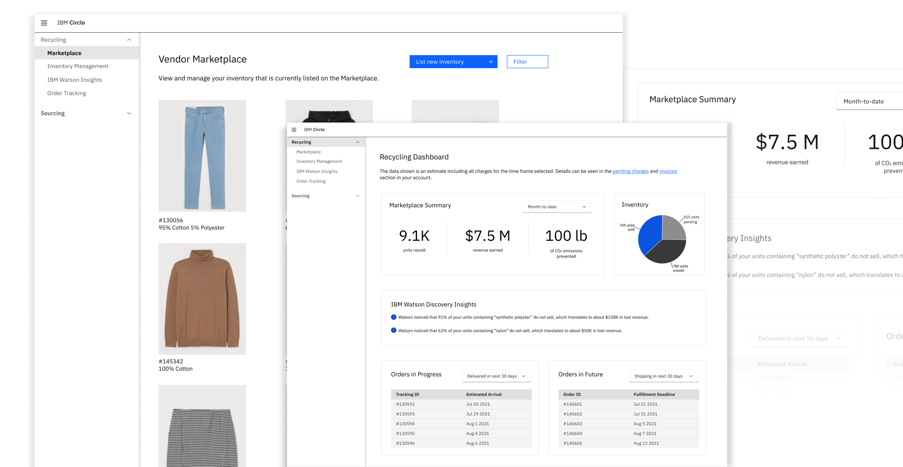

IBM UX Design Internship
May - August 2021
Overview
During the summer of 2021, I had the opportunity to be a part of IBM’s Red Hat Marketplace team. Red Hat Marketplace (RHM) is a digital store for cloud software, providing an all-in-one platform for customers to try, buy, and deploy container-based software on any cloud. Because RHM is an enterprise-facing platform, I designed for users like developers, IT leaders, procurement and software asset managers, and software vendors.
For my internship, I was on the RHM dashboard squad. The RHM dashboard provides customers with spend and usage data for their entire multi and hybrid cloud environment. The dashboard contains features that streamline the process of monitoring licenses, renewals, and usage, helping users reduce costs, track ROI, and better predict future spend.
Projects
I primarily worked on my intern project, which focused on discovery work for the dashboard squad. Because of NDA restrictions, I am unable to showcase my work on this page.
If you have the password, please use the button below to access my internship project details:
To maximize my time at IBM, I also worked on a few side projects, including writing documentation for two different parts of the dashboard, creating wireframes for client walkthroughs, and participating in a hackathon. The IBM Be(e) Innovative Intern Challenge lasted for 3 days, and I worked with a team of 4 other interns to create a solution that encouraged responsible production and green consumption. We used IBM technology to create a platform that connected clothing brands to manufacturers to reduce clothing waste.

As the sole designer on the team, I transformed my team’s brainstorming session into a paper prototype to help everyone conceptualize our idea. After my team agreed on our idea, I created high-fidelity UI wireframes (shown above) that followed IBM’s Carbon Design System. My designs allowed the brand to become a supplier of their unsold clothing, which gave manufacturers the chance to repurpose this fabric that was originally headed to the landfill.
Takeaways
This opportunity provided me with the chance to design in a complex environment<, creating solutions that simplify and scale.
Following IBM’s Enterprise Design Thinking principles, I was able to experience design within a large enterprise environment and learn to communicate cross-functionally between teams to continuously improve my design work. Although I independently designed the wireframes for my intern project, I consistently received feedback on my ideas from other designers, developers, and my product manager.
This process helped me learn how to balance feedback from different perspectives as well as take advantage of the specific expertise within my team.
My internship also helped me improve my growth mindset as I was constantly building my knowledge on cloud computing and RHM’s users while also learning how to design within ambiguity.
Thank you, IBM!
A huge thank you to the whole RHM design team, especially my mentor, Shelby Aranyi, and my manager, Bethany Doan. I am so grateful to have the support of these talented individuals, and I look forward to applying the skills I learned this summer to my future work.